盘古石阵困蛟龙， 内存三二总成空。 若问扩容何时有？ 待我卖肾换云宫。 ----deepseek 破大防，真难啊 可恶的黑曜石，改个标题直接炸了
HarmonyOS 手机
1、请分析 HarmonyOS 手机检材，打网球定的日期是？
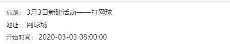
3月3日新建活动——打网球
2、请分析 HarmonyOS 手机检材，哪个浏览器搜索过鸿蒙开发教程？
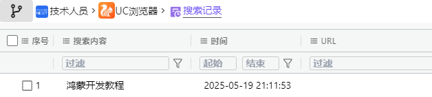
UC浏览器
3、请分析 HarmonyOS 手机检材，记录服务器信息的笔记软件名称是？
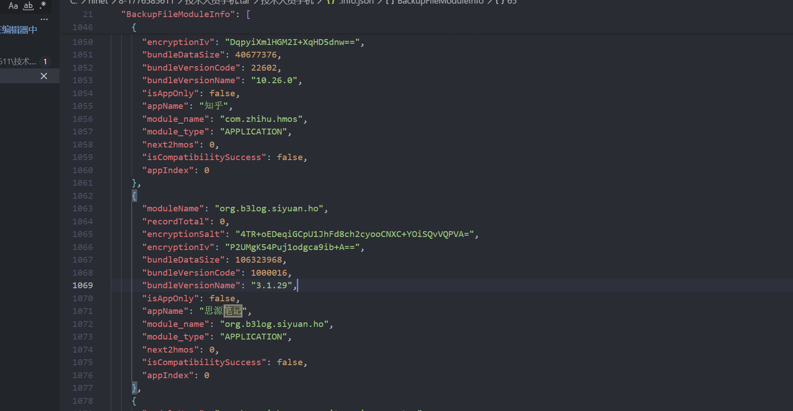
思源笔记
4、请分析 HarmonyOS 手机检材，笔记软件记录的 ip 地址一共几个？
让ai生成了一个小工具
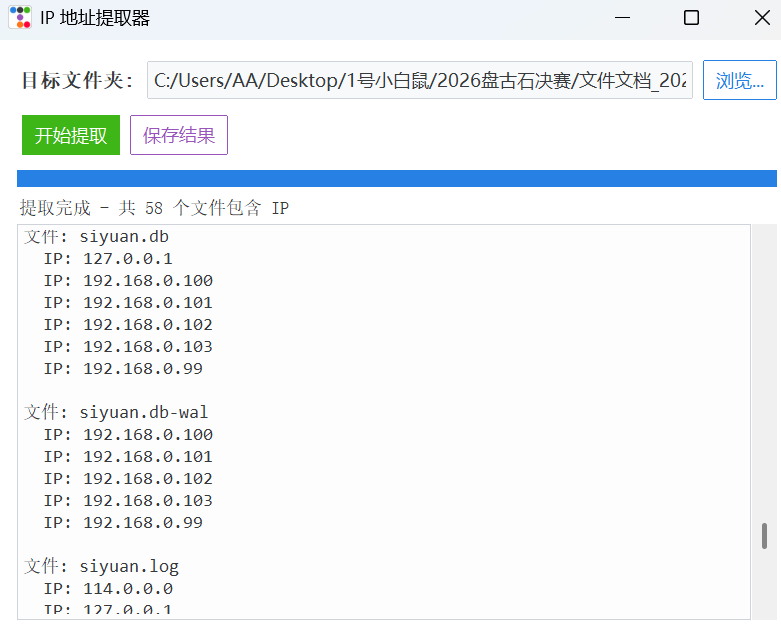
5
5、请分析 HarmonyOS 手机检材，DC 服务器用户名 administrator 的密码是？
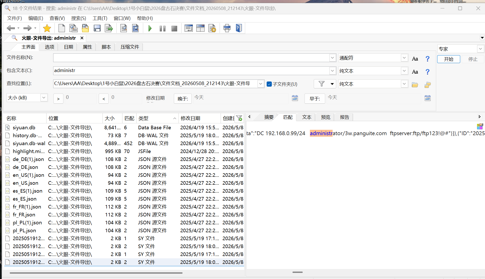
3w.panguite.com
iOS 手机
1、请分析 iOS 手机检材，手机的型号？
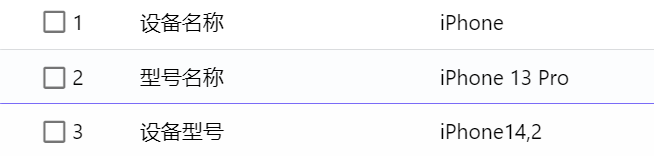
iPhone 13 Pro
2、请分析 iOS 手机检材，手机的 iOS 系统版本是？
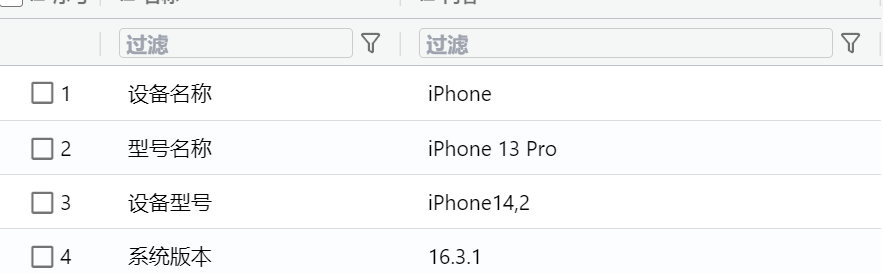
16.3.1
3、请分析 iOS 手机检材，手机的 IMEI 是？
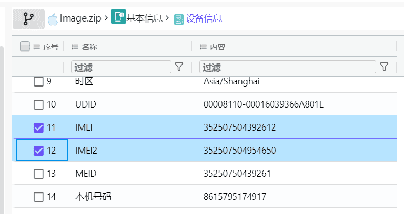
352507504392612,352507504954650
4、请分析 iOS 手机检材，曾经接收过一快递，收件地址是？
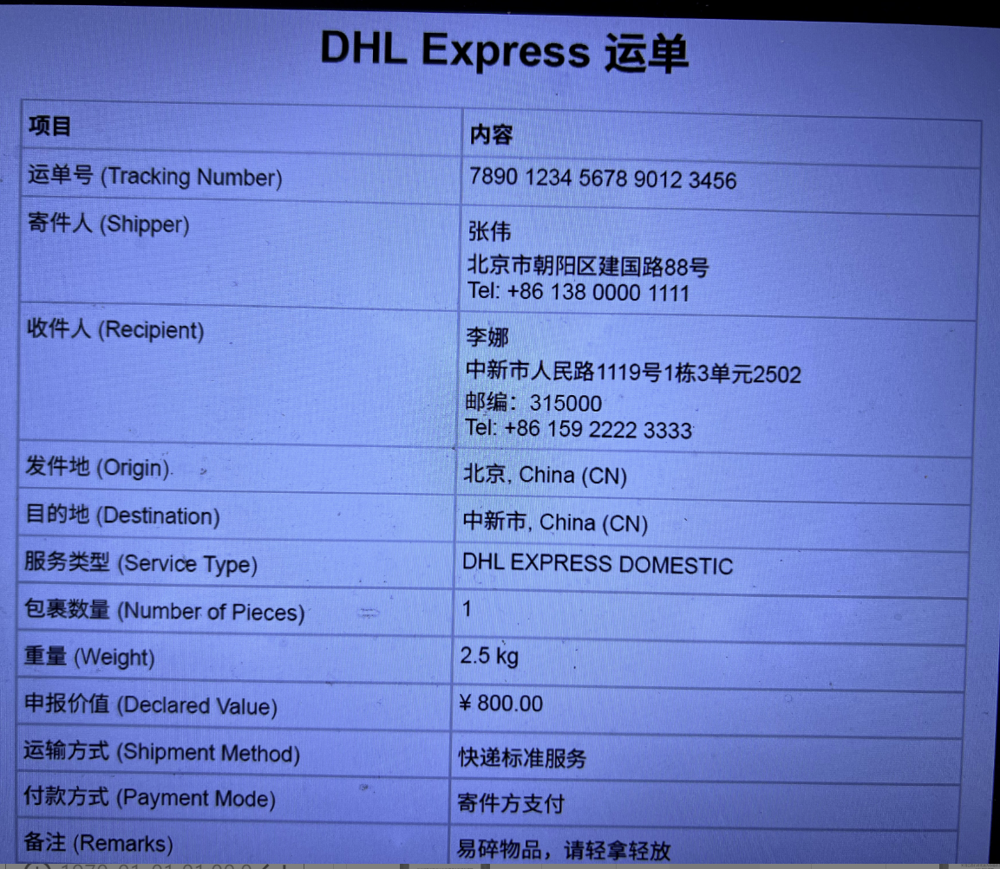
中新市人民路1119号1栋3单元2502
5、请分析 iOS 手机检材，该快递对应的联系电话是？
15922223333
6、请分析苹果手机检材，找出嫌疑人参加内部会议系统的地址？
真少见啊，全放这里
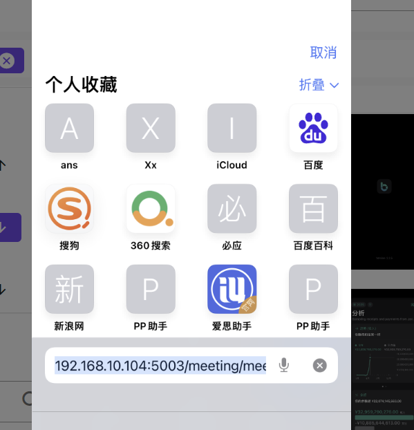
192.168.10.104:5003
7、请分析苹果手机检材，找出参加会议的时间？
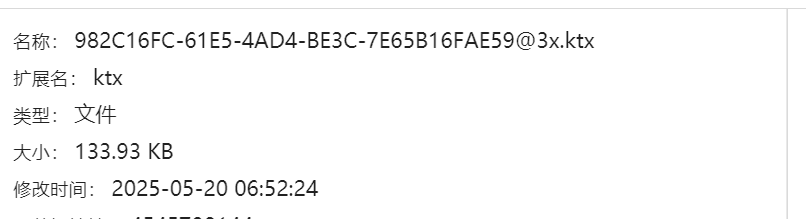
2025-05-20
8、请分析苹果手机检材，截止到 2025 年 4 月，该团队虚拟币投资总收入是多少？
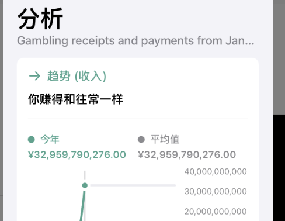
32959790276
9、请分析苹果手机检材，截止到 2025 年 4 月，该团队虚拟币投资总支出是多少？
10885644613
10、请分析苹果手机检材，该团队雇佣钟无声的佣金是多少？
Windows 计算机
1、请分析 Windows 计算机检材，操作系统安装时间 (UTC+8)？
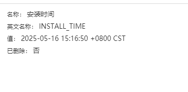
2025-05-16 15:16:50
2、请分析 Windows 计算机检材，登陆次数最多的用户？
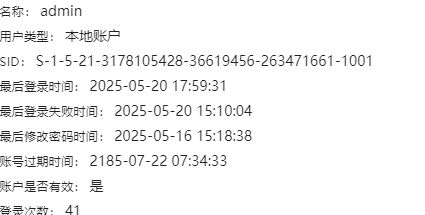
admin
3、请分析 Windows 计算机检材，最后一次弹出的移动设备制造商是？
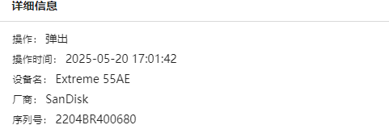
SanDisk
4、请分析 Windows 计算机检材，访问次数最多的网页名称是？
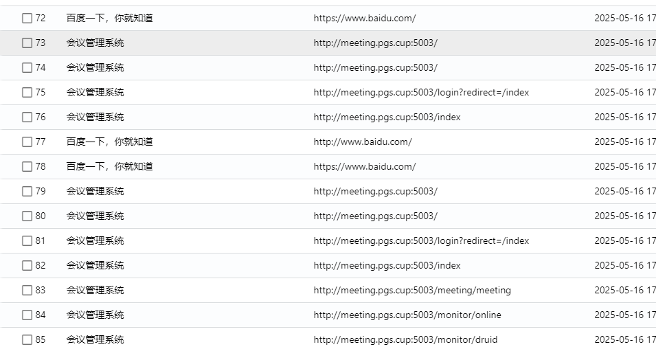
会议管理系统
5、请分析 Windows 计算机检材，记录鸿蒙备份密码的文件格式是？
看来得积累一点misc经验了。。。
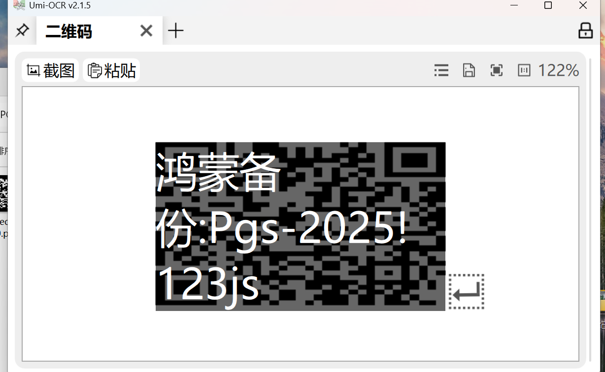
png
6、请分析 Windows 计算机检材，鸿蒙备份密码中的数字是 (按照从左到右)？
2025123P
7、请分析 Windows 计算机检材，桌面 txt 文档隐藏的密码是？
有一说一，我一直以为是在桌面上的文档里面，结果根本不是，而是在录像里面，太抽象了 后面发现有卷影。。。
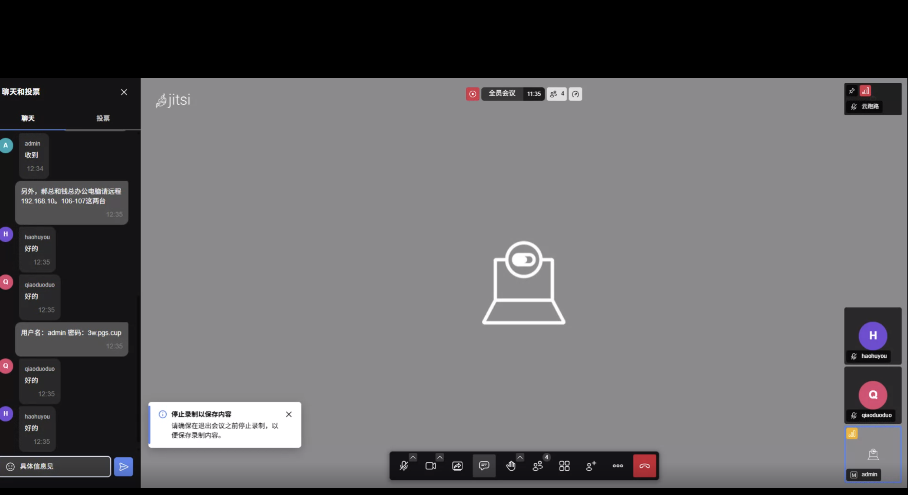
3w.pgs.cup
8、请分析 Windows 计算机检材，安装的邮件客户端是？
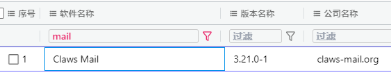
Claws Mail
9、请分析 Windows 计算机检材，碎片图片重构后 ESXi2 的登陆密码是？
为了做这个题目我特意做了个整合工具，虽然还有诸多缺陷，但姑且还是做出来了

P@88w0rd
10、请分析 Windows 计算机检材，xshell 连接记录共有几条？
又学到了。。。
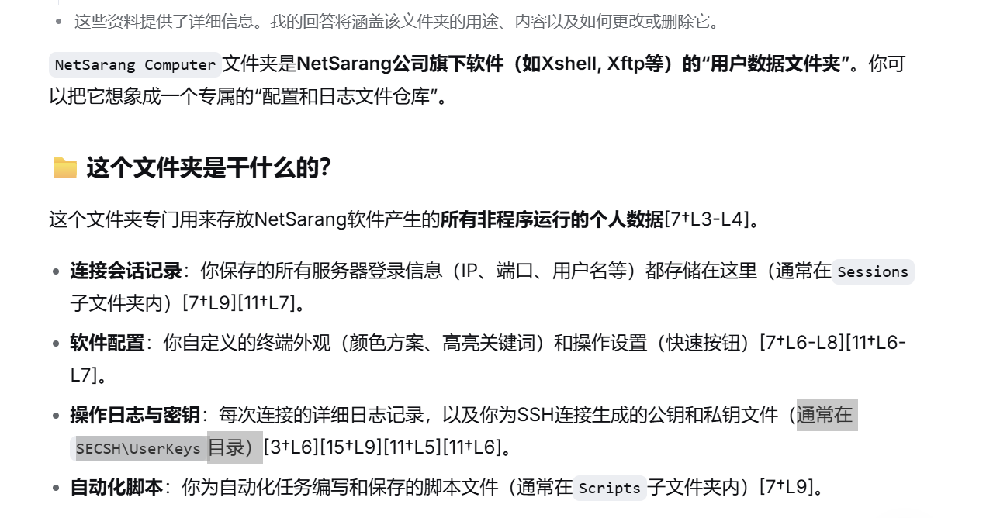
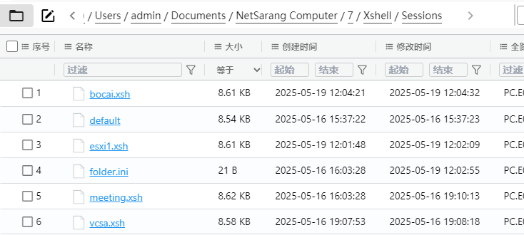
4
11、请分析 Windows 计算机检材，控制程序监听的端口号是？
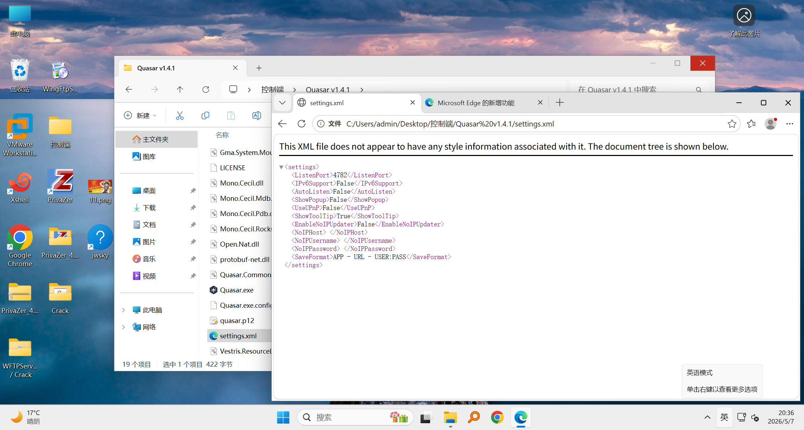
4782
12、请分析 Windows 计算机检材，控制端在什么时间控制过其他电脑？
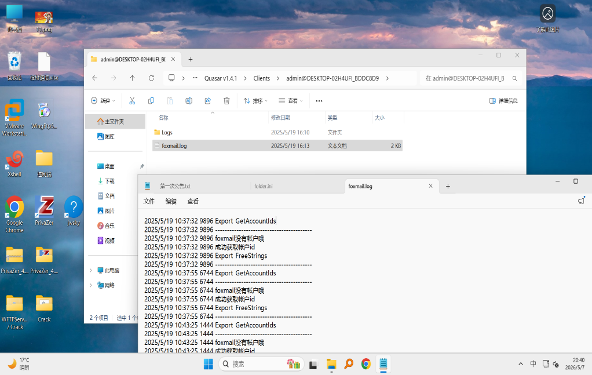
2025/5/19
HarmonyOS 程序分析
1、分析鸿蒙手机检材中“笔记.hap”文件，该软件应用名称是？
2、请分析 HarmonyOS 程序检材，软件的包名是？
3、请分析 HarmonyOS 程序检材，软件图标 md5 的后六位是？
4、请分析 HarmonyOS 程序检材，软件代码保存的文件名称是？
5、请分析 HarmonyOS 程序检材，软件的入口类是？
6、请分析 HarmonyOS 程序检材，软件的入口密码是？
7、请分析 HarmonyOS 程序检材，软件存储笔记的数据库名称是？
8、请分析 HarmonyOS 程序检材，数据库的打开密码是？
9、请分析 HarmonyOS 程序检材，数据库中笔记内容采用什么加密算法？
10、请分析 HarmonyOS 程序检材，数据库中笔记内容加密秘钥是？
服务器集群取证
做着里卡住了，去看了[西电师傅的wp](https://forensics.xidian.edu.cn/wiki/writeups/PGS2025Final/#_5)才知道了集群是计算机里面的 也算是给各位跟我一样刚学取证的师傅一点建议吧，写题目一定要连贯，拖的时间久了挺容易出问题的
1、请分析服务器集群检材，找出集群服务器内的集群名？
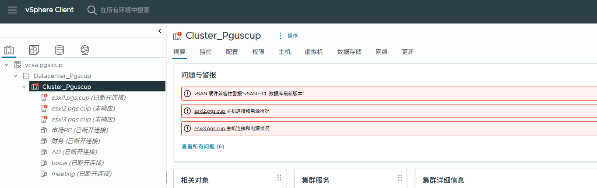
Cluster_Pguscup
2、请分析服务器集群检材，找出集群中共有多少台虚拟机？
我不知道为什么我有八个，我看其他师傅都是7个
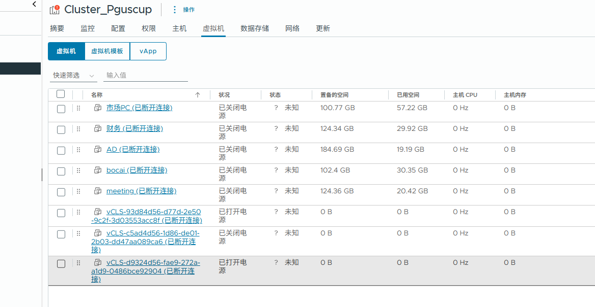
8
3、请分析服务器集群检材，找出集群中 vMotion 所用的网段？
4、请分析服务器集群检材，找出集群磁盘组内共存储了多少个 iSO 镜像？
5、请分析服务器集群检材，找出集群内 "市场 PC" 虚拟机在磁盘组中存储的名称？
6、请分析服务器集群检材，找出管理此集群的服务器 vcsa 的主机名？
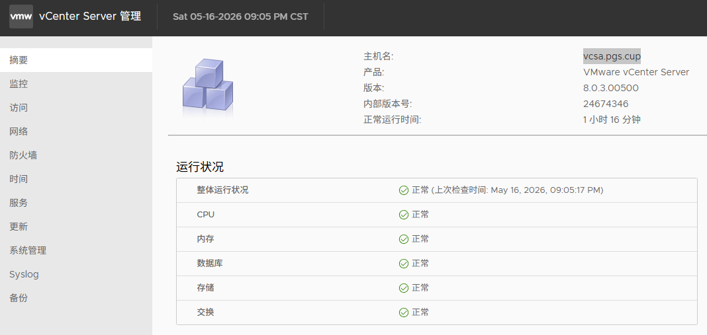
vcsa.pgs.cup
7、请分析服务器集群检材，找出 vcsa 的版本号？
8.0.3.00500
8、请分析服务器集群检材，找出 vcsa 中设置的时间服务器？
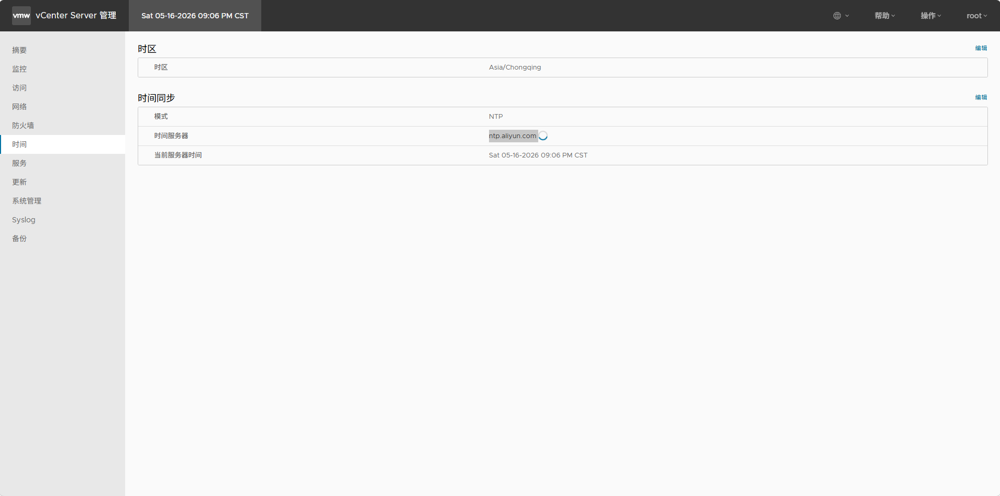
ntp.aliyun.com
9、请分析服务器集群检材，找出 vcsa 每天几点进行备份？
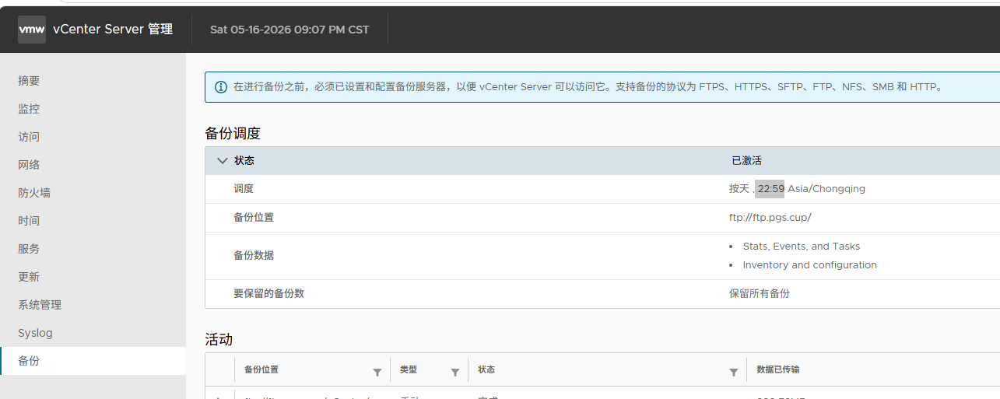
22:59
10、请分析服务器集群检材，找出 vcsa 管理页面的端口号？
5480
11、请分析服务器集群检材，找出 vcsa 服务器 web client 登录的账户名？
administrator@pgs.cup
12、请分析服务器集群检材，找出 vcsa 管理的服务器主机的系统版本号？
13、请分析服务器集群检材，分析 vcsa 管理的服务器主机的文件系统类型？
14、请分析服务器集群检材，找出 vSAN 服务所对应的端口组名称？
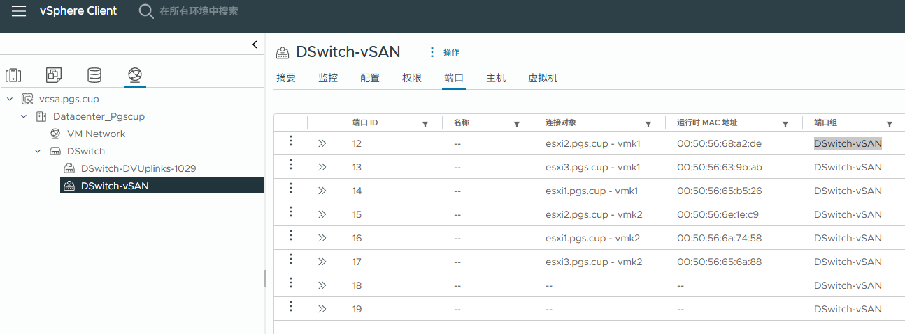
DSwitch-vSAN
15、请分析服务器集群检材，该端口组上行端口数量？
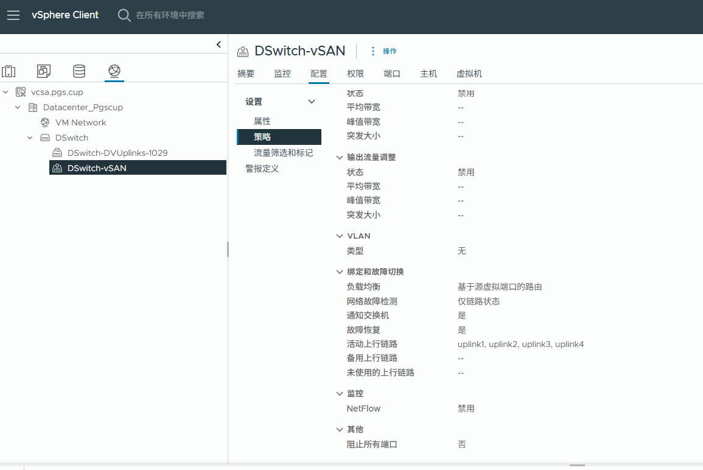
4
16、请分析服务器集群检材，找出 vSAN 集群许可密钥的前 5 位？
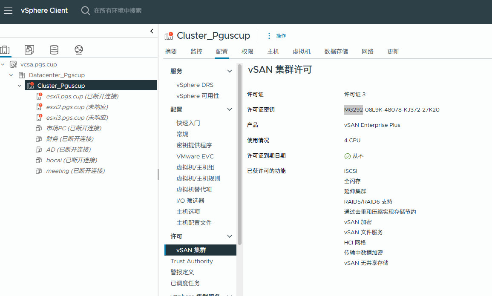
MG292
17、请分析服务器集群检材，找出 vSAN 集群类型？

HCl
虚拟机取证
真是见鬼，仿真之后ESXi1登陆不进去，2却能登陆，离谱
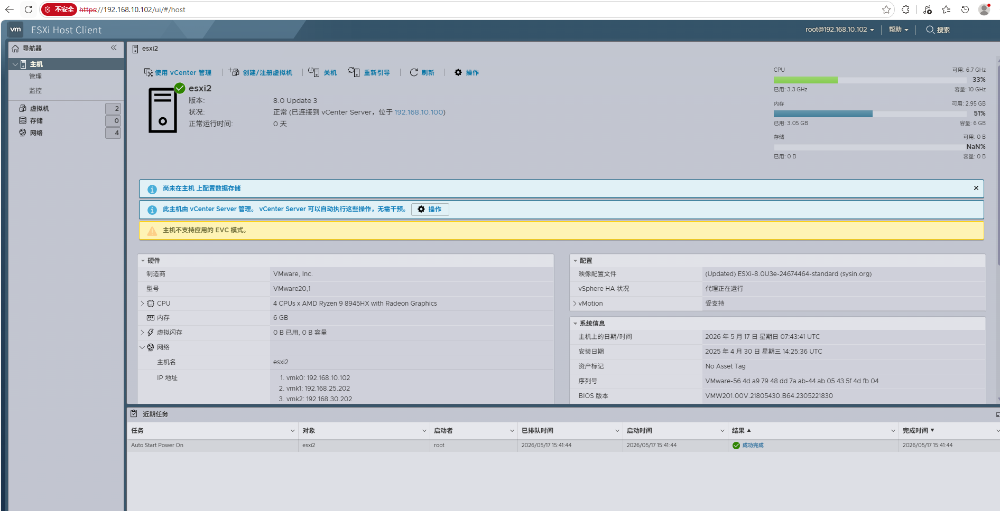
1、请分析虚拟机检材，找出该组织域名？
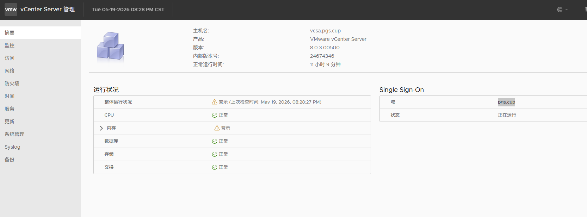
pgs.cup
2、请分析虚拟机检材，找出 DNS 服务器系统 Build 版本？
谢谢[Joy师傅的wp](https://www.cnblogs.com/Joyooo/p/19813040)
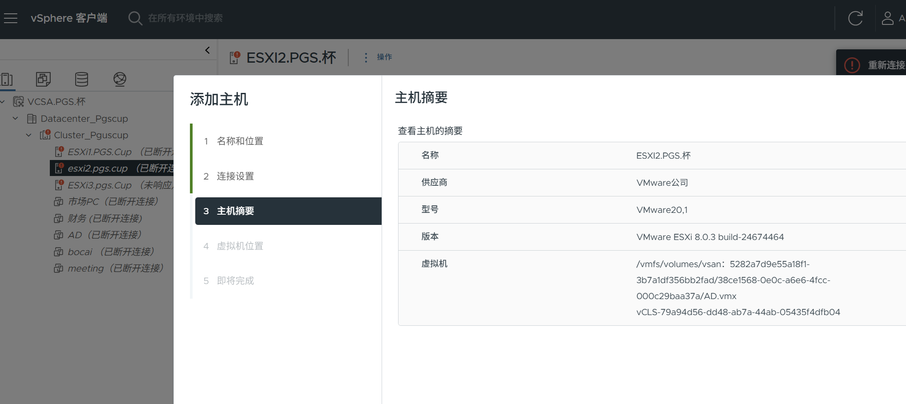
24674464
3、请分析虚拟机检材，找出 DNS 服务器系统初始安装时间？
4、请分析虚拟机检材，找出 DNS 服务器 IP？
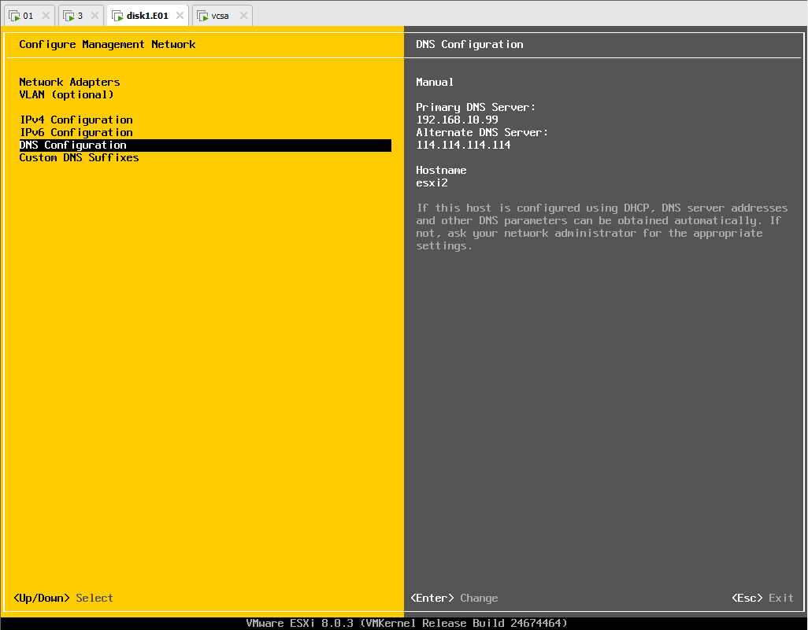
192.168.10.99
5、请分析虚拟机检材，找出 DNS 服务器内自建了多少条 DNS 记录？
6、请分析虚拟机检材，找出 DNS 服务器内，主机 ftp 对应的 IP 地址？
192.168.10.99